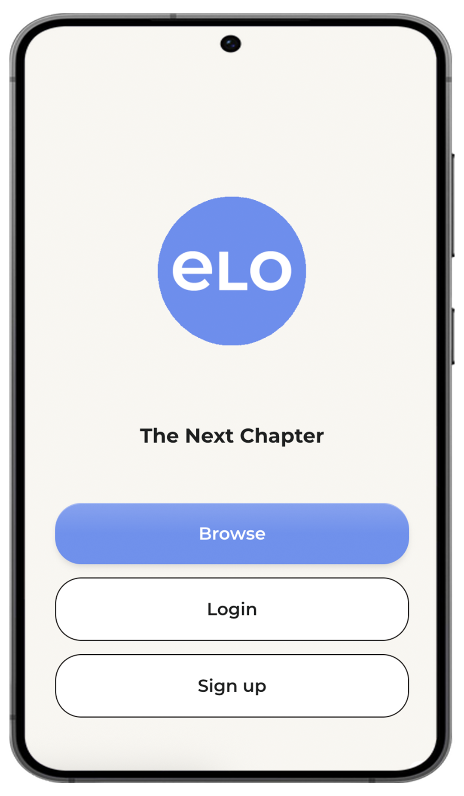
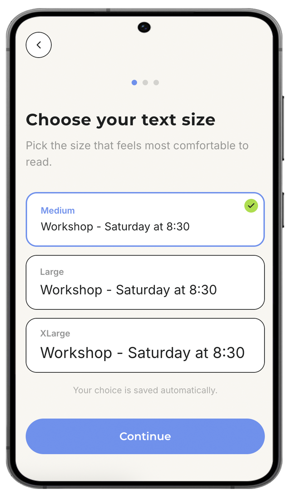
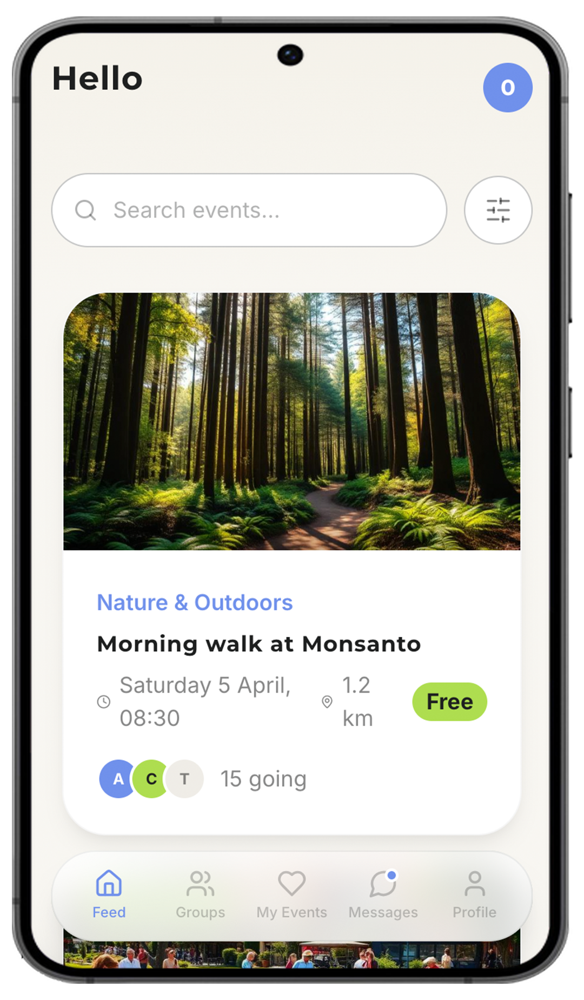
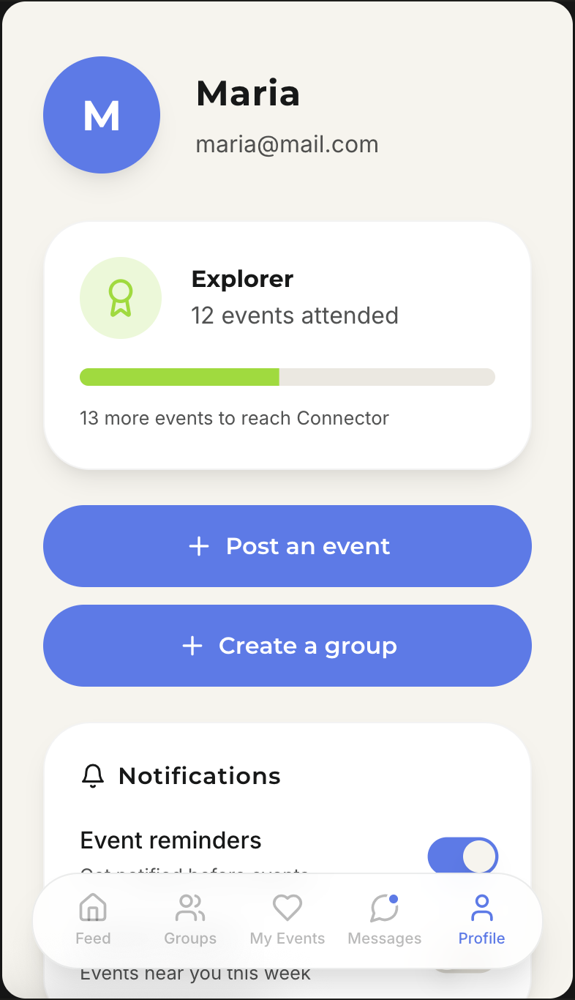

01
Chapter 01
The suitcase and the one-way ticket.
I'd spent three years studying Nutrition Science - rigorous, analytical, systems-based thinking. Then life had other plans. I left Portugal in 2011 with 1000 euros and a broken suitcase. People thought I was mad. Maybe I was. But I've always done my best work at the edge of my comfort zone - in new environments, with new people, figuring things out as I go. London wasn't a plan. It was a decision. And it turned out to be the best one I ever made.
I can land somewhere with almost nothing and figure it out.
02
Chapter 02
What London taught me
Seven years in one of the world's most international cities taught me to read people fast - their context, their needs, their frustrations. I worked in restaurants, hostels, studios. I led teams, managed chaos, and kept things running in environments where no two days were the same. I arrived without fluency and left with full professional English, advanced Spanish, and enough of a dozen other languages to make people feel at home. You learn differently when you have no choice but to.
Every room I walked into was different. I learned to make it work anyway.
03
Chapter 03
Learning to see
While working sixteen-hour shifts at a hostel, I was also studying photography at the University of the Arts London. It taught me that good work is about decisions - what to include, what to cut, what actually matters to the person on the other side. I've carried that instinct into everything I've done since. And it taught me something about myself too: I don't fold under pressure. I get clearer.
Constraints don't stop good work. They shape it.
04
Chapter 04
A decade on set
Back in Portugal from 2018, I spent a decade making things happen across film, advertising, photography and creative production. BBC documentaries. Fast & Furious 10. Twelve simultaneous brand projects. Hotel to hotel, deadline to deadline. I coordinated teams, managed stakeholders, kept budgets tight and shoots on schedule. I was always the person in the middle - translating between vision and reality, between what people wanted and what was actually possible.
Delivery is a discipline. I've been practising it for ten years.
05
Chapter 05
The shift.
After a decade of parachuting into other people's projects, I started asking different questions. Not just how do we make this work - but why are we making it, and how will we know if it worked? That shift changed everything. I realised I didn't want another project. I wanted a problem worth staying with. A team worth investing in. Work I could watch grow. I completed a Product Management & AI Bootcamp at AllWomen - not to change who I am, but to put a name and a framework on what I've always done.
Done moving on. Ready to build.
Done moving on. Ready to build.
Open to Associate PM, Product Owner, Product Manager & Scrum Master roles - Lisbon, hybrid or remote.
Get in touch →
filipa.m.work@gmail.com · +351 914 919 212
ELO
Retirement should be a beginning - not an ending. But for millions in Portugal, it becomes the moment the world stops calling. A free, government-backed app connecting adults 65+ with local events, community groups and volunteer opportunities. No ads. No noise. Just connection.
The Problem
One problem. Three sides.
25% of Portugal is over 65 - projected to reach 34.5% by 2050. 67% report loneliness as a sustained condition. This is not sentiment. It is a public health crisis.
1
Loneliness & isolation
67% report chronic loneliness. The mortality risk equals smoking 15 cigarettes a day.
2
No tool built for them
Facebook comes with noise, fake news, and algorithmic chaos. Our research shows users are disengaging.
3
The discovery gap
69% don't know where to find local activities. The problem is not supply - it is connection.
Primary Research
We didn't assume. We listened.
5 in-depth interviews with adults aged 62-73 and a survey of 23 respondents. All 5 independently described the same gap - without prompting.
"The information exists somewhere, I'm sure. But I can't get there on my own."
"I know there are things happening near me. I just don't know how to find them."
5
In-depth interviews ages 62-73
5/5
Described the same gap independently
North Star Metric
We measure belonging, not presence.
Monthly Engaged Community Members
Users who attend ≥1 event · interact in ≥1 group · OR exchange ≥1 message - in a calendar month.
Why not MAU? Because presence is not the same as belonging.
Prototype
14 screens. Built for real people.
Key screens from the Phase 1 MVP prototype - designed around the principle that value comes before friction.

Onboarding - browse before login

Text size - second screen, before anything else

Event feed - local, calm, no noise

Profile - Maria's journey from attender to organiser
Honest Assessment
What works. What doesn't. Yet.
Strengths
Open by default - browse without login
Government trust as a feature
No ads, no noise, no opinions
Designed for this audience from scratch
Free. Forever.
Challenges
Cold start - content before community
Gov funding is a goal, not confirmed
Behaviour change is slow
Small research sample - directional only
Digital literacy range is wide
Reflections
What I learned.
The metric is the product philosophy
Choosing Monthly Engaged Community Members over MAU changed everything. What you measure shapes what you build.
Honest assessment is a PM skill
The hardest slide to write was the limitations. It's also the one I'm most proud of. Good PMs know what they don't know.
I understand users because I've been one
My mother is 65+. I've watched her navigate products not built for her. That's not empathy as a soft skill - that's product insight as lived experience.
Education
Formal training across science, visual arts and product management.
Product Management & AI Bootcamp
AllWomen
Feb 2026 – Apr 2026 · Online
Agile methodologies, product strategy, user research, roadmapping, and Generative AI integration in product workflows.
BA Photography
University of the Arts London – London College of Communication
2014 – 2017 · London
A photography degree that went far beyond the camera - critical theory, conceptual thinking, visual communication, and analysing how technology and culture shape the world we live in.
Science – Nutrition (3 years completed)
Atlântica University
2007 – 2010 · Portugal
Three years of rigorous scientific training spanning data analysis, research methods, human behaviour and systems thinking - the analytical foundation I bring to every complex problem.
Certifications
AI Fluency: Framework & Foundations
Google AI Essentials Specialisation
Social Media Marketing I & II
Online Marketing Fundamentals
Leadership